Özel Kaya Alp Ağız ve Diş Sağlığı Polikliniği
Gülüşünüzü bilimle ve özenle planlıyoruz.
İmplanttan şeffaf plağa, çocuk diş hekimliğinden dijital gülüş tasarımına; tüm tedaviler uzman hekimler ve üç boyutlu dijital planlama ile tek çatı altında.
- Sağlık Bakanlığı ruhsatlı
- 3D tomografi ve dijital ölçü
- TR · EN · DE · AR koordinasyon
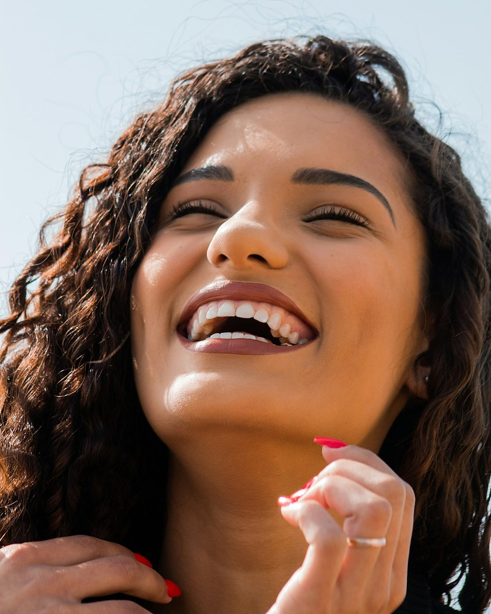
Aynı gün randevuAkut ağrıda öncelikli planlama
3D dijital planlamaTedavi öncesi önizleme
20+yıllık
klinik deneyim
klinik deneyim
Online RandevuSize uygun saati seçin
Röntgen GönderHekim ön değerlendirmesi
Uluslararası HastalarEN · DE · AR koordinatör
Acil Diş AğrısıMesai içinde aynı gün muayene
Tedavilerimiz
Tüm tedaviler
Tüm ağız ve diş sağlığı hizmetleri, tek çatı altında.
Muayeneden implant cerrahisine kadar her aşama; klinik içi dijital iş akışı ve ilgili uzmanlık alanındaki hekimlerimizle planlanır.

İmplant Tedavileri
Tek diş eksikliğinden All-on-4'e; dijital cerrahi rehberle planlanan implant çözümleri.
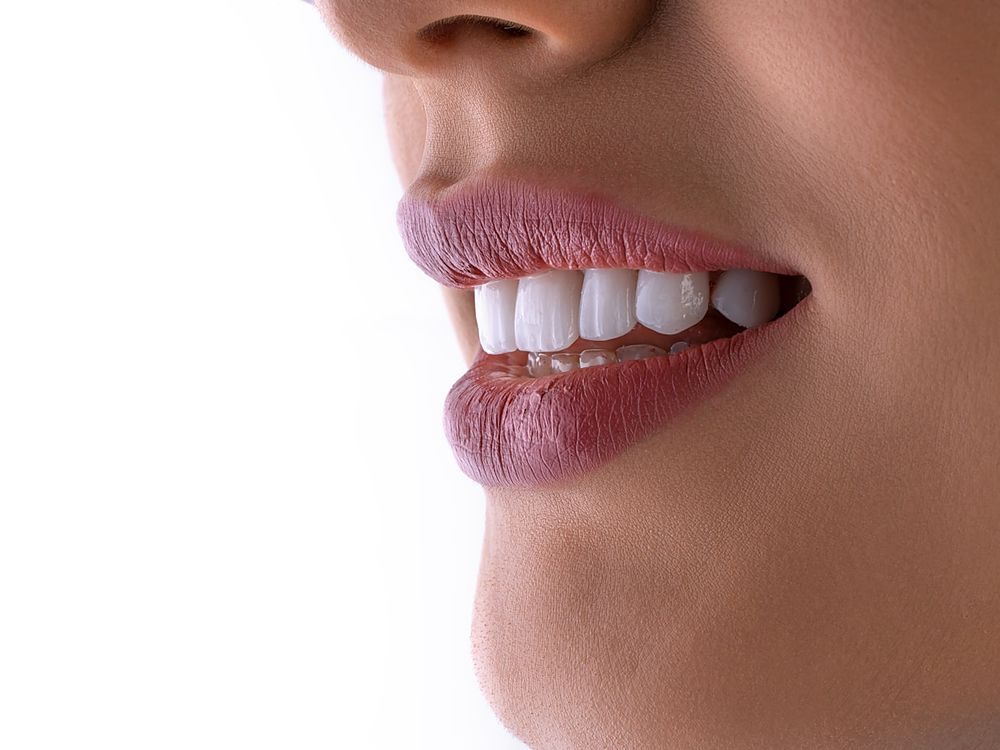
Estetik Diş Hekimliği
Lamine, zirkonyum ve E-max restorasyonlar; hekim kontrolünde beyazlatma ve pembe estetik.
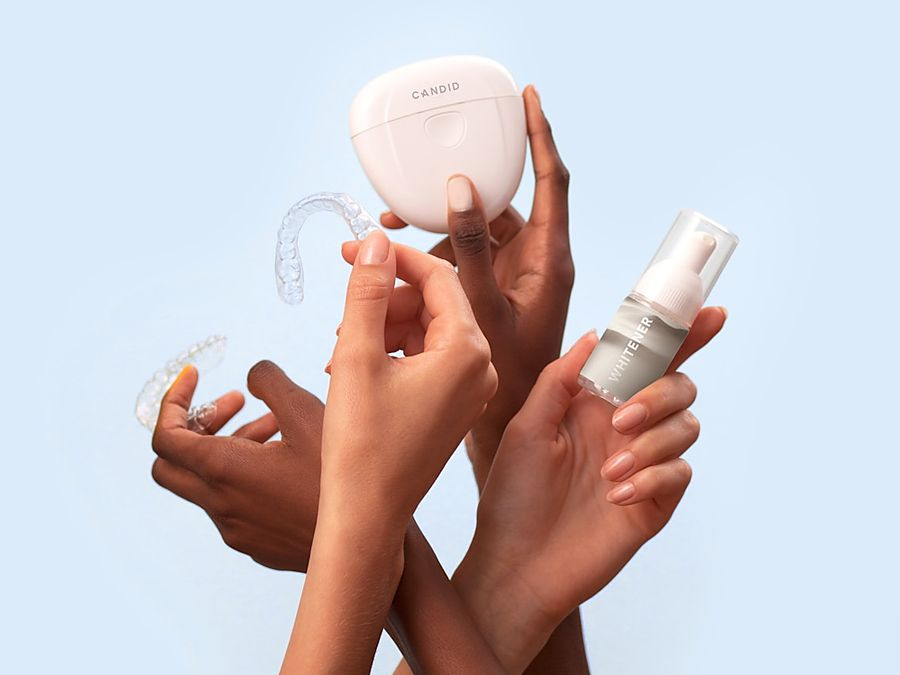
Ortodonti & Şeffaf Plak
Yetişkin ve çocuklarda şeffaf plak, şeffaf ve metal braket seçenekleri; dijital takip.
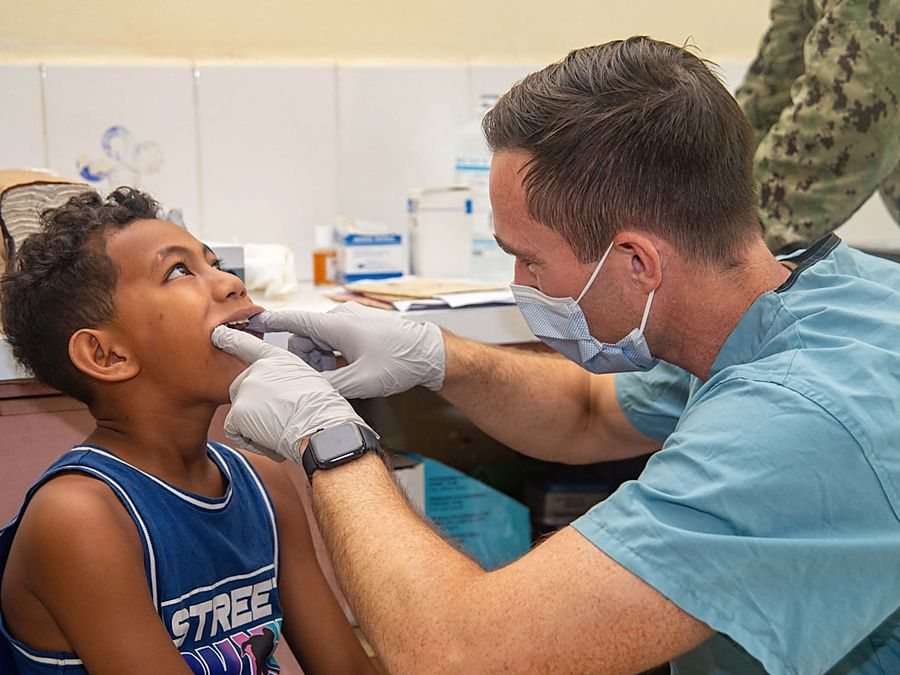
Çocuk Diş Hekimliği
Koruyucu uygulamalar, süt dişi tedavileri ve çocuklara özel yaklaşım; gerektiğinde sedasyon.

Kanal Tedavisi
Mikroskop destekli endodonti ile doğal dişin korunması; tekrarlayan kanal tedavileri.

Ağız, Diş ve Çene Cerrahisi
Gömülü 20'lik diş çekimi, kist operasyonları, sinüs lifting ve kemik greftleme.

Protez Tedavileri
Hareketli, hibrit ve implant üstü protezler; dijital ölçü ile hızlı ve uyumlu üretim.
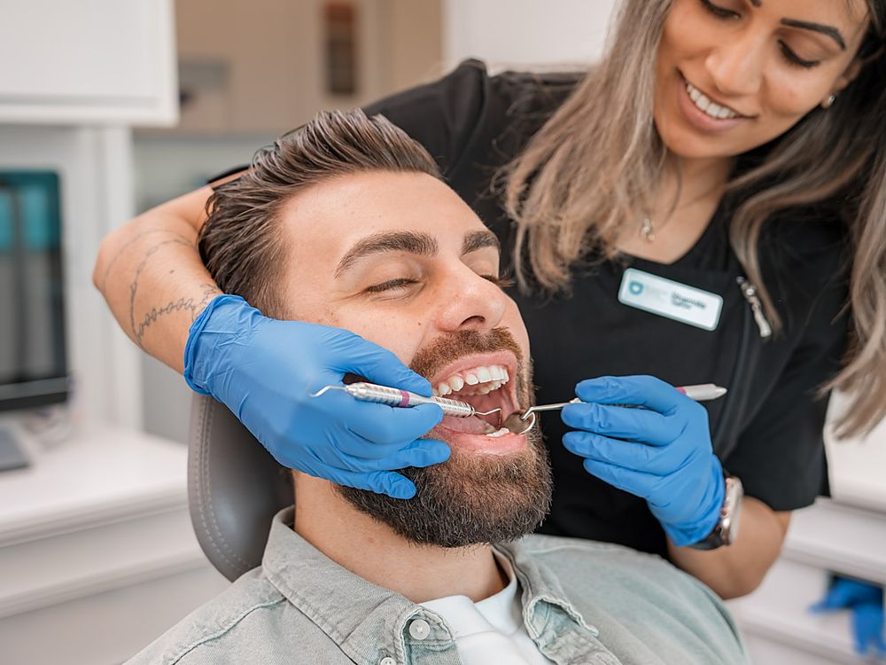
Diş Eti Tedavileri
Diş taşı temizliği, flap operasyonu ve diş eti çekilmesinde greft uygulamaları.
Kaydırarak keşfedin
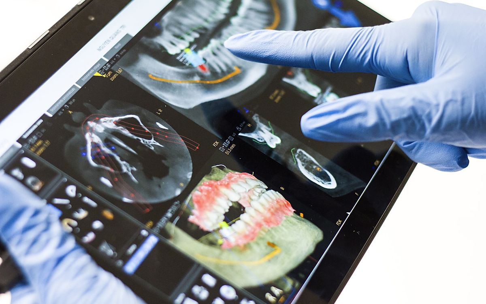
İmza uygulamamız
Dijital Gülüş Tasarımı
Yüz oranlarınız ve diş yapınız dijital ortamda analiz edilir; tedaviye başlamadan önce planlanan sonucu üç boyutlu olarak birlikte değerlendiririz.
- 1Yüz ve diş analizi, 3D tarama
- 2Dijital tasarım ve önizleme
- 3Onayınızla klinik içi üretim
Neden Kaya Alp
Güven, şeffaflık ve ölçülebilir kalite.
Bir diş kliniğinden beklediğiniz her şeyi; bilgilendirilmiş onam, izlenebilir sterilizasyon ve yazılı tedavi planı ile standart hâline getirdik.
Uzman hekim kadrosu
Her tedavi, ilgili uzmanlık alanındaki hekim tarafından planlanır ve uygulanır.
Dijital iş akışı
3D tomografi, ağız içi tarayıcı ve klinik içi CAD/CAM ile daha az seans.
Sterilizasyon ve hijyen
EN 13060 Sınıf B otoklav, tek kullanımlık setler ve izlenebilir kayıt.
Yazılı tedavi planı
Seçenekler, seans sayısı, süre ve ücret bilgisi yazılı olarak sunulur.
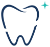
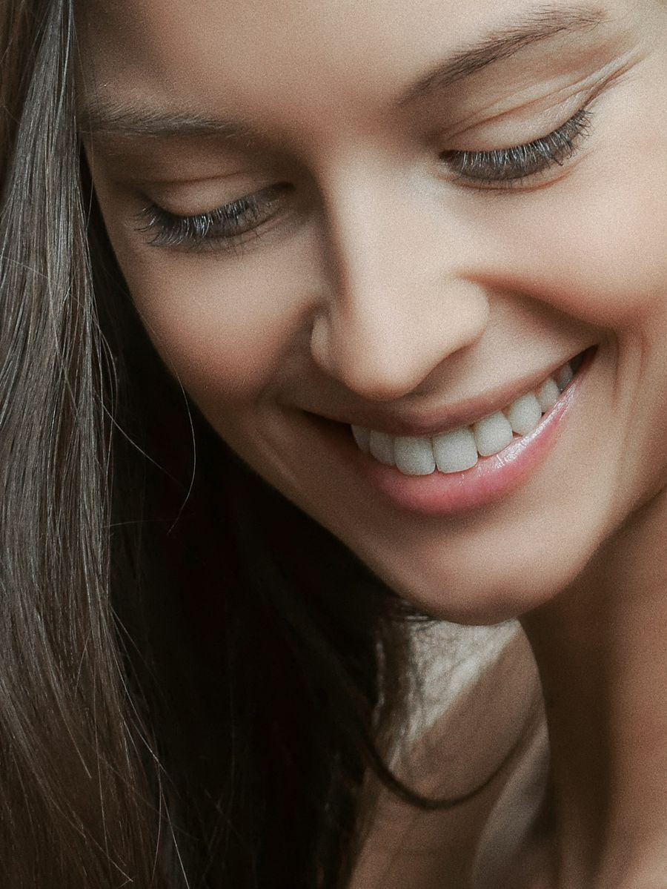
20+yıllık klinik deneyim
Sağlık Bakanlığı ruhsatlı
20+
yıllık klinik deneyim
12
diş hekimi ve uzman
9
uzmanlık alanı tek çatı altında
4
dilde hasta koordinasyonu
Tedavi Süreci
İlk görüşmeden takibe, dört net adım.
Ne olacağını önceden bilmek kaygıyı azaltır. Bu yüzden her hastamız için süreç aynı şeffaflıkla ilerler.
- 1
Ön görüşme ve dijital muayene
3D tomografi ve ağız içi tarama ile mevcut durumunuz değerlendirilir.
- Panoramik / 3D görüntüleme
- Ağız içi dijital tarama
- 2
Kişiye özel tedavi planı
Seçenekler, seans sayısı ve süreler yazılı olarak paylaşılır.
- Alternatiflerin karşılaştırılması
- Bilgilendirilmiş onam
- 3
Tedavi
Konfor odaklı, gerektiğinde sedasyon destekli uygulamalar.
- Dijital anestezi
- Klinik içi CAD/CAM üretim
- 4
Takip ve koruyucu bakım
Kontrol randevuları ve hatırlatmalarla sonucun kalıcılığı desteklenir.
- Kontrol takvimi
- Dijital hasta dosyası
Hekimlerimiz
Tüm hekimler
Alanında uzman, güncel bilgiyle çalışan bir ekip.
Diploma ve uzmanlık bilgileri her hekim profilinde yer alır. Randevunuzu doğrudan hekim seçerek planlayabilirsiniz.
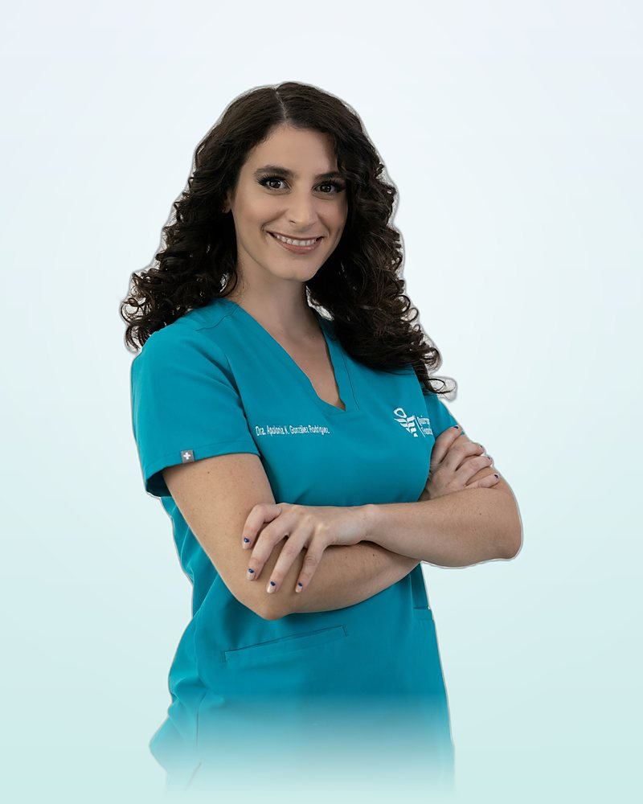
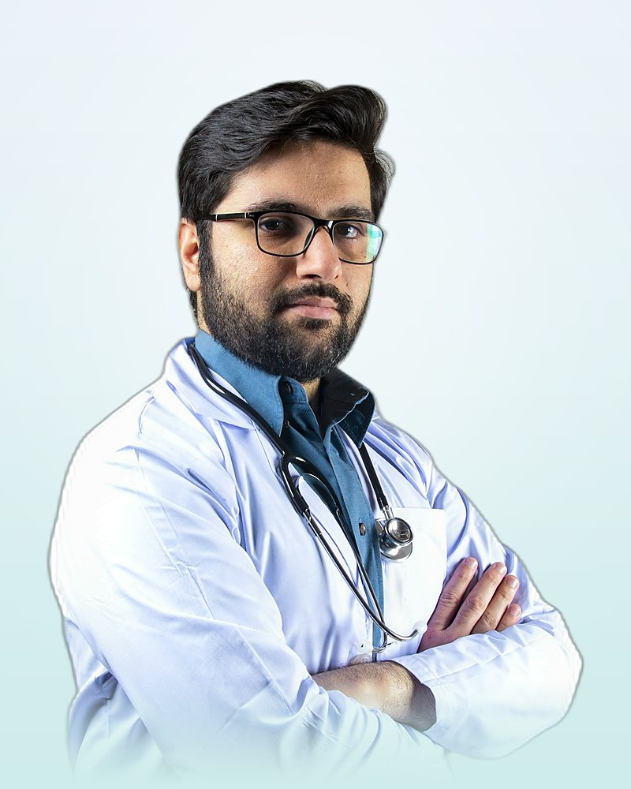
Kaydırarak keşfedin
Klinik & Teknoloji
Sakin, aydınlık ve tamamen dijital bir klinik.
Tedavi odalarından sterilizasyon ünitesine kadar her alan, hasta konforu ve izlenebilir hijyen için tasarlandı.
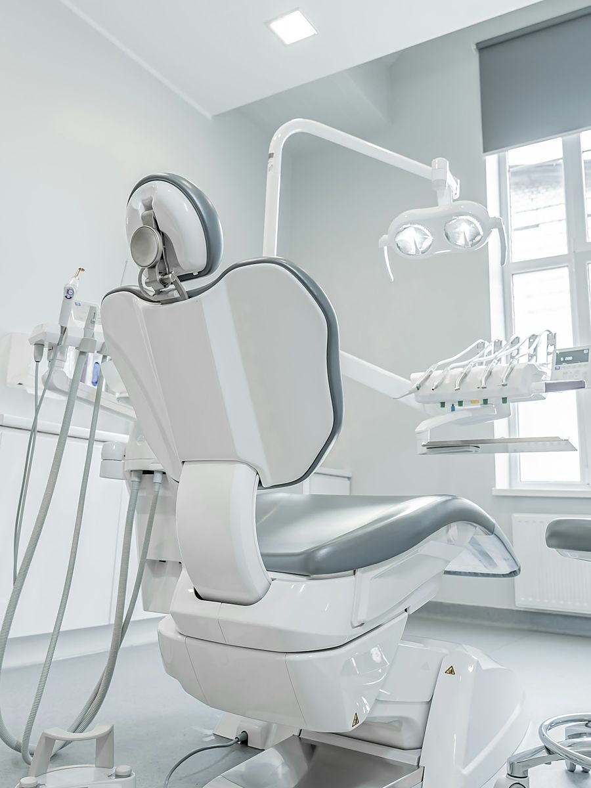
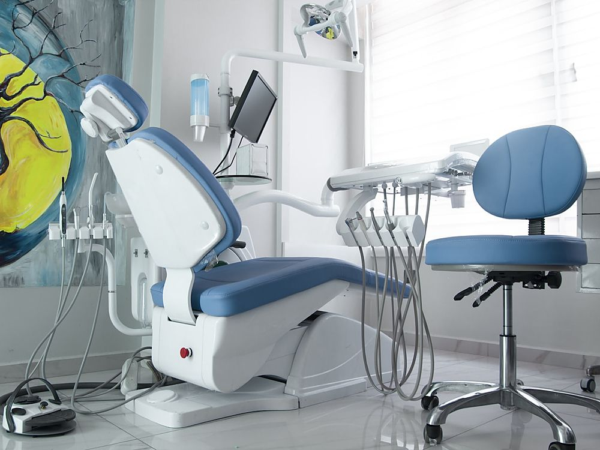
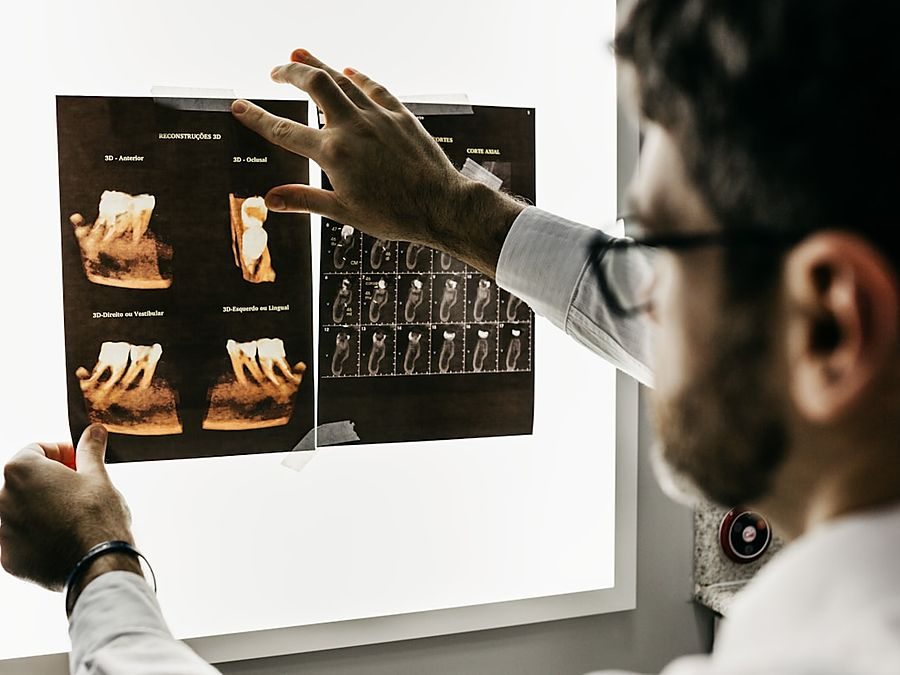

- 3D Dental Tomografi (CBCT)Düşük dozla üç boyutlu görüntüleme; implant ve cerrahi planlamanın temeli.
- Ağız İçi TarayıcıÖlçü maddesi olmadan, dakikalar içinde dijital ölçü.
- Klinik İçi CAD/CAMTasarım ve üretim aynı gün; daha az randevu.
- Sınıf B OtoklavEN 13060 standardında sterilizasyon ve dijital kayıt.
- Dijital AnesteziBilgisayar kontrollü, daha konforlu uyuşturma.
- Sedasyon ÜnitesiAnestezi uzmanı eşliğinde sedasyon imkânı.
Uluslararası Hastalar · International Patients
Tedaviniz için Türkiye'ye geliyorsanız, süreci sizinle birlikte planlıyoruz.
İngilizce, Almanca ve Arapça konuşan hasta koordinatörlerimiz; randevu, konaklama ve ulaşım konularında yol gösterir. Planlama, siz gelmeden önce yazılı olarak netleşir.
- Online ön değerlendirme ve yazılı tedavi planı
- Seansların tek seyahatte tamamlanacak şekilde planlanması
- Havalimanı transferi ve konaklama için yönlendirme
- Tedavi sonrası uzaktan takip ve görüntülü kontrol
EnglishDeutschالعربيةTürkçe
Online ön değerlendirme
Gelmeden önce planınızı netleştirin
Panoramik röntgen ve birkaç fotoğraf ile hekimlerimiz ön değerlendirme yapar.
- 1Röntgen ve fotoğraflarınızı güvenli form üzerinden yükleyin.
- 2Hekim değerlendirmesi ve yazılı plan genellikle 2 iş günü içinde iletilir.
- 3Görüntülü görüşmede planı, süreyi ve seyahat takvimini birlikte netleştirin.
Hasta Rehberi · SSS
Merak ettikleriniz, hekimlerimizin yanıtlarıyla.
Bu yanıtlar genel bilgilendirme amaçlıdır; kişisel tanı ve tedavi için hekim muayenesi gereklidir.
İlk randevunuza gelirken
Varsa önceki röntgenleriniz, kullandığınız ilaçların listesi ve kimliğiniz yeterli. İlk görüşme yaklaşık 30–40 dakika sürer.
Genel sağlık durumu uygun, çene gelişimi tamamlanmış ve yeterli kemik hacmine sahip bireylere uygulanabilir. Kemik hacmi yetersizse greft veya sinüs lifting ile hazırlık yapılabilir. Uygunluk; 3D tomografi ve klinik muayene sonrasında hekiminiz tarafından değerlendirilir.
Kanal tedavisi lokal anestezi altında yapılır; işlem sırasında ağrı beklenmez. Tedavi sonrası birkaç gün hafif hassasiyet görülebilir ve genellikle kendiliğinden geçer.
Süre, vakanın karmaşıklığına göre değişir; hafif çapraşıklıklarda birkaç ay, kapsamlı vakalarda 12–24 ay sürebilir. Kesin süre, dijital planlama sonrasında hekiminiz tarafından belirlenir.
Hekim kontrolünde, doğru konsantrasyon ve sürede uygulanan beyazlatma mineye kalıcı zarar vermez. Geçici hassasiyet görülebilir; kontrolsüz ev tipi ürünler ise risk taşır.
İlk süt dişinin sürmesiyle birlikte veya en geç 1 yaşında ilk kontrol önerilir. Erken tanışma çürük riskini azaltır ve diş hekimi korkusunu önler.
Anestezi uzmanı eşliğinde ve uygun donanımla uygulanan sedasyon güvenli bir yöntemdir. Öncesinde genel sağlık değerlendirmesi yapılır; yüksek diş kaygısı olan yetişkinler ve çocuklar için tercih edilebilir.
Sağlık Köşesi
Tüm yazılar
Hekimlerimizden anlaşılır, güncel bilgiler.
Her yazı, ilgili uzmanlık alanındaki hekimimiz tarafından yazılır ve tarihlenir.
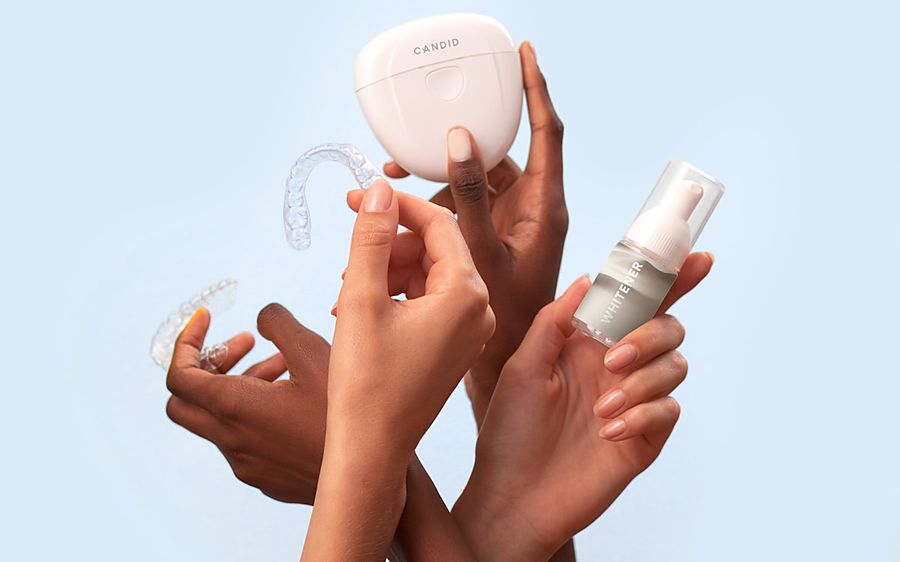
Şeffaf plak mı, braket mi? Hangi durumda hangisi uygun?
İki yöntemin avantajlarını, sınırlarını ve hekiminizin karar verirken nelere baktığını anlatıyoruz.
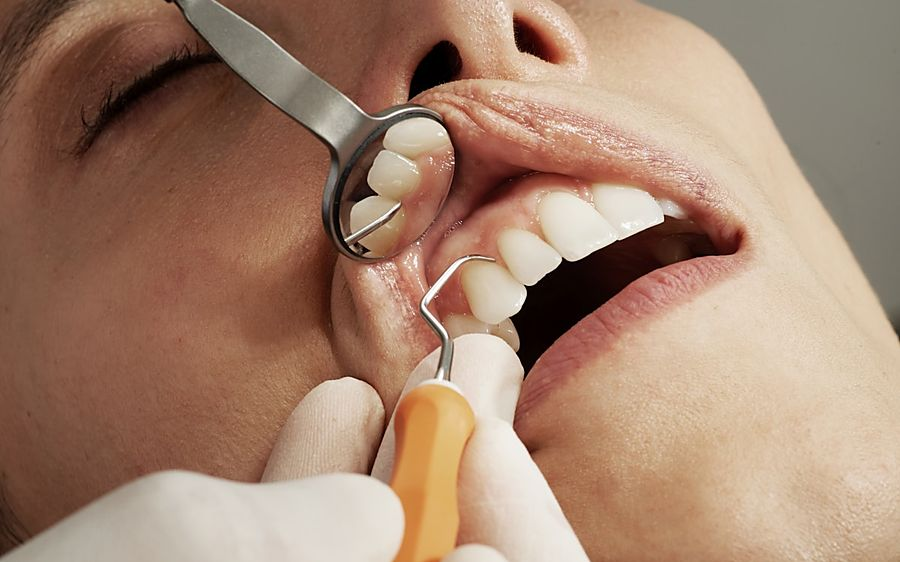
Diş taşı temizliği dişleri inceltir mi?
En sık duyduğumuz endişelerden birini, bilimsel kaynaklarla ve sade bir dille yanıtlıyoruz.
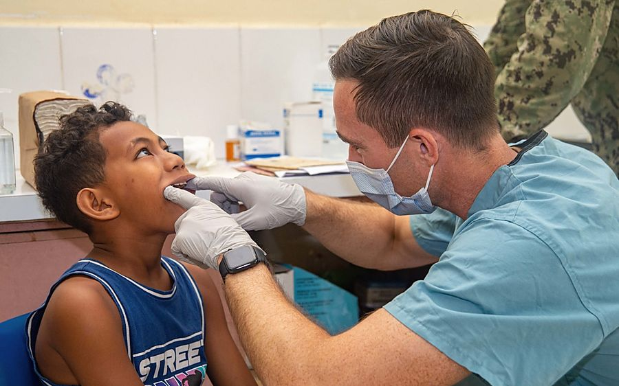
Çocuklarda flor uygulaması: ne zaman, ne sıklıkla?
Koruyucu diş hekimliğinin en etkili araçlarından biri hakkında ebeveynlerin bilmesi gerekenler.
Kaydırarak keşfedin
Randevu & İletişim
Randevunuzu birkaç adımda planlayın.
Formu doldurun; hasta danışmanımız mesai saatlerinde sizi arayarak randevunuzu teyit etsin.